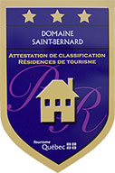

CalendrierTous les samedis soirs 20h00 2 septembre Course A toi Lola Séjournez
|
Bienvenue au Domaine Saint-Bernard!Le Domaine Saint-Bernard est un espace vert, dit ‘’parc écotouristique municipal’’ préservé à perpétuité par la Fiducie du Domaine Saint-Bernard pour que les citoyens de Mont-Tremblant et les visiteurs dans la région puissent bénéficier d'un site nature exceptionnel. Sur ses 1 500 acres de territoire grandeur nature, on y a aménagé des sentiers à découvrir été comme hiver, un jardin d'oiseau unique en son genre, le Pavillon d'astronomie Velan, le seul observatoire astronomique des Laurentides, le parcours d'entraînement Wheeler ou encore la plage du Lac Raynauld.
Au gré des saisons, le Domaine Saint-Bernard est l'hôte d'une foule d'activités dont le Symposium des arts, le camp annuel de Fondation du Dr Julien, la course Le relais Pour la vie et le Festival classique des Hautes-Laurentides. C'est grâce à son personnel dévoué et aux Amis du Domaine, que le Domaine Saint-Benard est devenu au fil des ans cette aire de charme, de beauté et de quiétude. Nous vous invitons à nous visiter ou encore venez séjourner dans un de nos pavillons dans une formule d'hébergement tout à fait unique. |
Accès gratuit pour les citoyens Avis au visiteurPour assurer la sécurité de nos visiteurs et maintenir la propreté du site, les chiens ne sont pas admis. La chasse et la pêche sont également interdits.

|

Rejoignez-nous